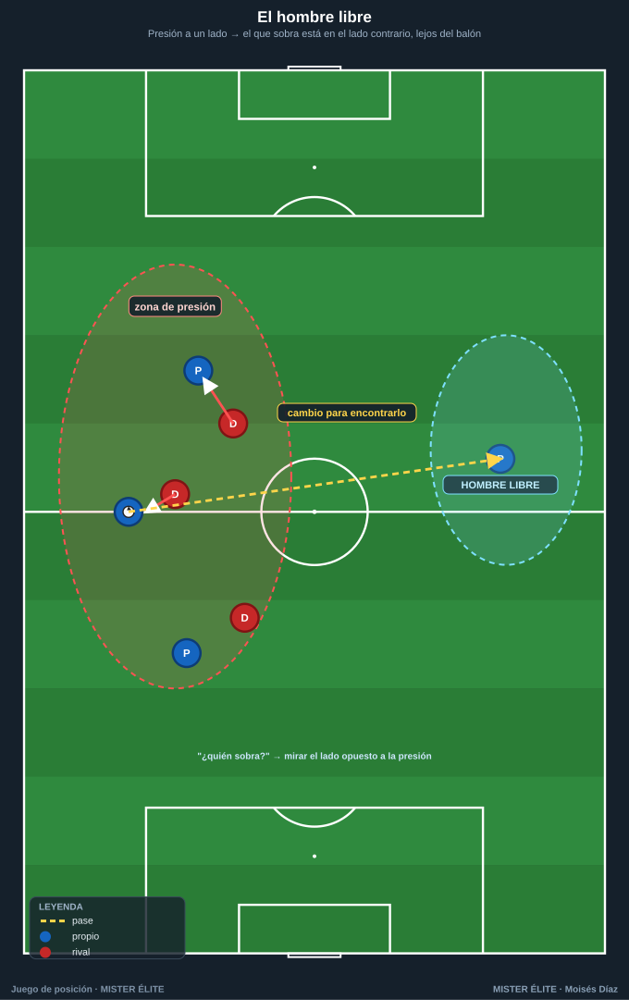
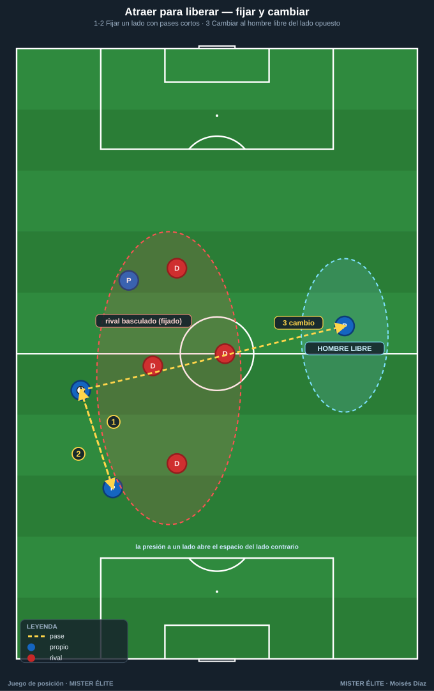
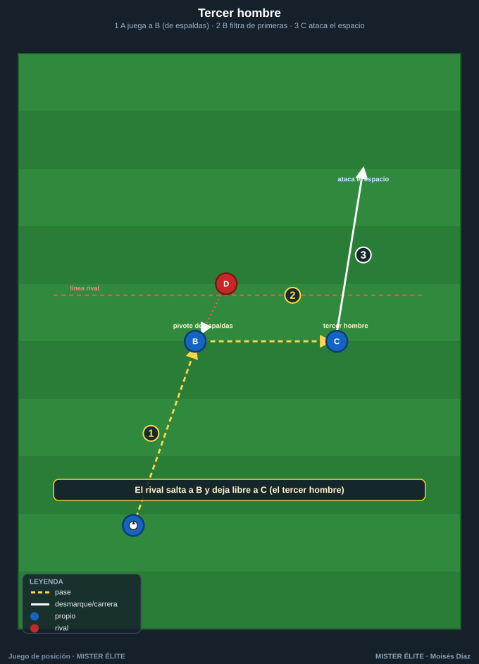
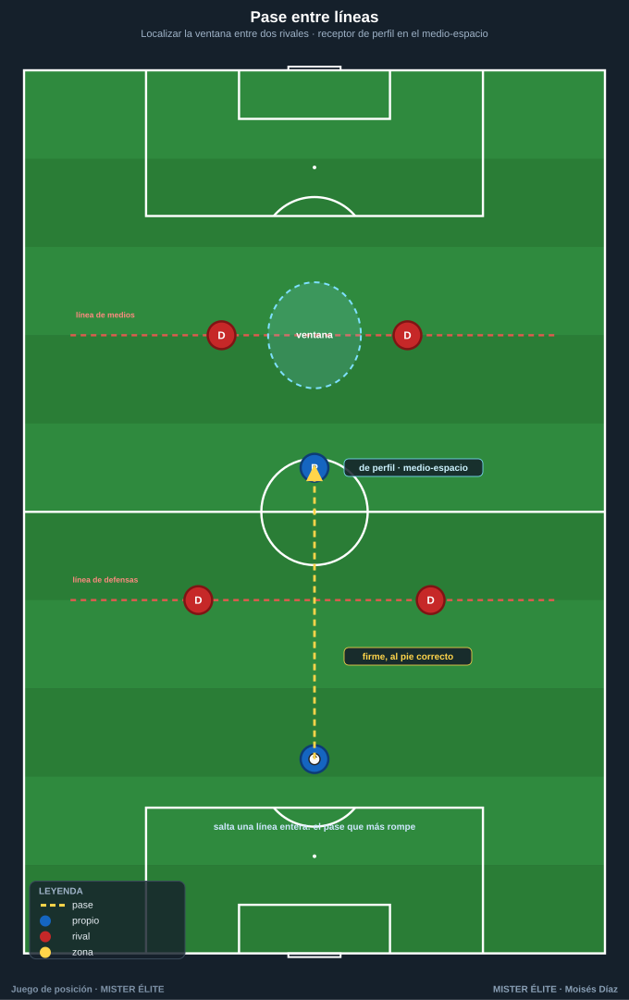
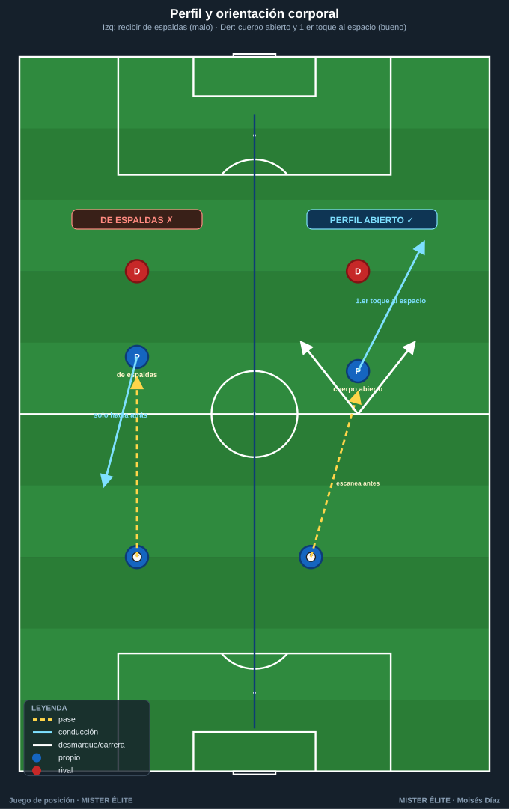
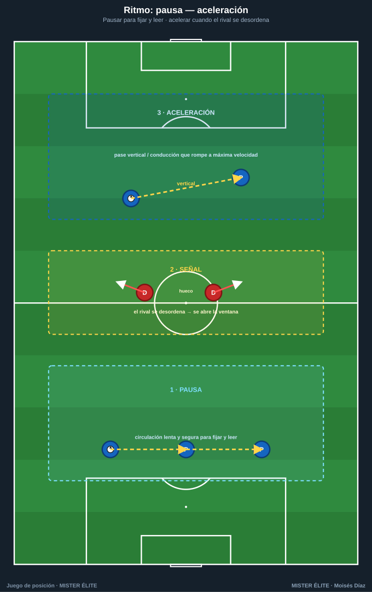

Módulo 02 · Mecanismos del juego de posición
Las herramientas concretas con las que se ejecuta el juego de posición. Para cada una: qué es, cómo se hace y cuándo usarla.
1. El hombre libre (y cómo encontrarlo)

Qué es. El jugador sin marca directa que, por la estructura, queda sobrante respecto a la presión rival. Es la consecuencia natural de una superioridad bien creada. Encontrarlo y usarlo es el objetivo nº 1 de cada acción.
Cómo encontrarlo:
- Contar líneas. Si presionan con 2 y salimos con 3, uno sobra: ese es el libre. Identificarlo antes de recibir (escaneo).
- Mirar el lado opuesto a la presión. El rival no cubre todo; el libre suele estar lejos del balón.
- Es dinámico: al circular el balón, el sobrante cambia. Hay que leerlo en tiempo real.
Cuándo usarlo. Siempre que exista. Si está orientado y puede progresar, se le busca de inmediato (vale un cambio de orientación). Si está de espaldas o presionado, primero se mueve el balón para reubicarlo.
Coaching: "¿Quién sobra?" en cada secuencia. Si nadie lo identifica, la posesión se vuelve estéril.
2. Atraer para liberar (fijar y cambiar)

Qué es. Provocar la presión en una zona (normalmente un lado) para abrir el espacio contrario y cambiar allí el juego. Convierte la presión rival en ventaja.
Cómo se hace:
- Fijar/atraer: circular en un lado con apoyos cercanos para que el rival bascule y concentre jugadores ahí.
- Liberar/cambiar: en cuanto el rival se ha desplazado, cambiar la orientación al lado contrario, donde hay superioridad o 1v1 con espacio.
- El cambio puede ser largo (al extremo a la cal) o escalonado por dentro vía el hombre libre.
Cuándo usarlo. Contra rivales que presionan o basculan en bloque. Cuándo NO: si el rival defiende muy abierto/pasivo, fijar no abre nada; mejor progresar por dentro.
3. Tercer hombre

Qué es. Combinación de tres jugadores para alcanzar a un compañero (el "tercero") que el pasador no podía encontrar directamente. A↔B sirve para que B encuentre a C.
Cómo se hace: A pasa a B (apoyo que recibe de espaldas o pivote); B, a un toque, filtra a C, que ataca el espacio entre líneas o la espalda de la defensa. Clave: C se mueve mientras el balón viaja A→B (sincronía); B juega de primeras.
Cuándo usarlo. Cuando el pase directo está tapado pero hay un apoyo intermedio. Recurso estrella contra presiones agresivas: el rival que salta a B deja libre a C.
4. Pase entre líneas

Qué es. El pase introducido en el espacio entre dos líneas rivales (típicamente medios y defensas). Es el pase que más rompe: salta una línea entera.
Cómo se hace: el receptor se sitúa en el medio-espacio, en el punto ciego del defensor, y temporiza; el pasador busca la ventana (hueco entre dos rivales) y juega firme y al pie correcto (el que deja al receptor orientado). Si no hay ventana, primero se mueve el balón.
Cuándo usarlo. Cuando hay un jugador libre y orientable entre líneas. Cuándo NO arriesgarlo: receptor de espaldas y muy vigilado en zona propia (pérdida peligrosa).
5. Perfil y orientación corporal

Qué es. La postura al recibir: medio-girado / perfil abierto para controlar orientado hacia adelante y ver el máximo de campo. Convierte una recepción en progresión.
Cómo se hace: orientarse antes de que llegue el balón (cuerpo hacia la portería rival, no de cara al pasador); recibir con el pie más alejado del defensor y dar el primer toque hacia el espacio libre; escanear (2-3 vistazos) antes de recibir.
Cuándo usarlo. Siempre que se reciba de cara o de costado. Si se recibe de espaldas con un defensor pegado, no se fuerza el giro: se protege y descarga.
Coaching: el primer toque ya es una decisión táctica. "Recibe abierto, mira antes".
6. Ritmo: pausa — aceleración

Qué es. Gestionar la velocidad del juego: pausar (circular tranquilo, fijar, leer) para acelerar en el momento exacto en que se abre la ventaja. El balón cambia de marcha.
Cómo se hace: pausa = posesión paciente y segura para provocar al rival y leer dónde se abrirá el espacio; aceleración = cuando aparece el hombre libre / la ventana / el 1v1, velocidad máxima para rematar la ventaja antes de que el rival ajuste. La señal para acelerar la da el rival desordenado.
Cuándo usarlo. Pausa cuando no hay ventaja clara; acelera cuando aparece. Error típico: acelerar siempre (pérdidas) o pausar siempre (esterilidad).
7. Conducir vs pasar
Qué es. La decisión entre conducir o pasar. El pase mueve el balón más rápido que cualquier jugada; pero conducir tiene una función táctica concreta: atraer y fijar.
Cuándo CONDUCIR: para fijar a un rival y obligarle a salir (libera a un compañero); cuando hay espacio por delante y nadie mejor situado; para ganar la línea y atraer una segunda presión.
Cuándo PASAR: cuando el pase progresa más que la conducción; bajo presión cercana; para mover al rival rápido (cambio de orientación).
Regla práctica: conduzco para crear superioridad (atraer), paso para aprovecharla. Conducir sin intención es un error.
Ideas clave
- El hombre libre es el objetivo nº 1: se encuentra contando líneas y mirando el lado opuesto a la presión.
- Atraer-cambiar convierte la presión del rival en ventaja; el tercer hombre supera al que salta a un apoyo.
- El pase entre líneas es la progresión más rentable; exige ventana y receptor orientado.
- El perfil convierte recepción en progresión: cuerpo abierto, mirar antes, primer toque al espacio.
- El ritmo es leer cuándo pausar (fijar) y cuándo acelerar (romper); se conduce para fijar, se pasa para aprovechar.
Errores comunes
| Error | Qué pasa | Corrección |
|---|---|---|
| Posesión horizontal estéril | El balón va de lado a lado sin romper líneas. | Buscar siempre un pase vertical/diagonal o al hombre libre. |
| Amontonarse | Se quitan espacio, facilitan la presión, no hay líneas limpias. | "Máx. 2 por carril, no 3 en línea"; reocupar carriles vacíos. |
| Falta de profundidad | Nadie amenaza la espalda; el rival sube y comprime. | Un jugador siempre en la última línea que fije a la defensa. |
| Recibir de espaldas sin necesidad | Se juega hacia atrás, no se progresa. | Orientar el cuerpo antes de recibir; perfil abierto. |
| No identificar al hombre libre | Se desperdicia la superioridad creada. | Escaneo + "¿quién sobra?"; jugar al lado contrario de la presión. |
| Acelerar/pausar a destiempo | Pérdidas o esterilidad. | Leer al rival: acelerar cuando se desordena, pausar cuando hay equilibrio. |
MISTER ÉLITE — Moisés Díaz